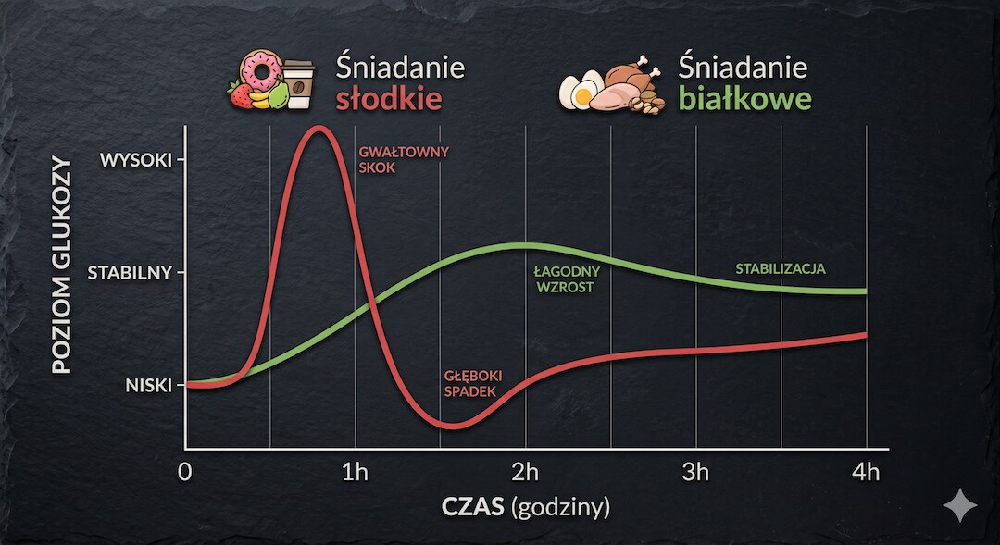
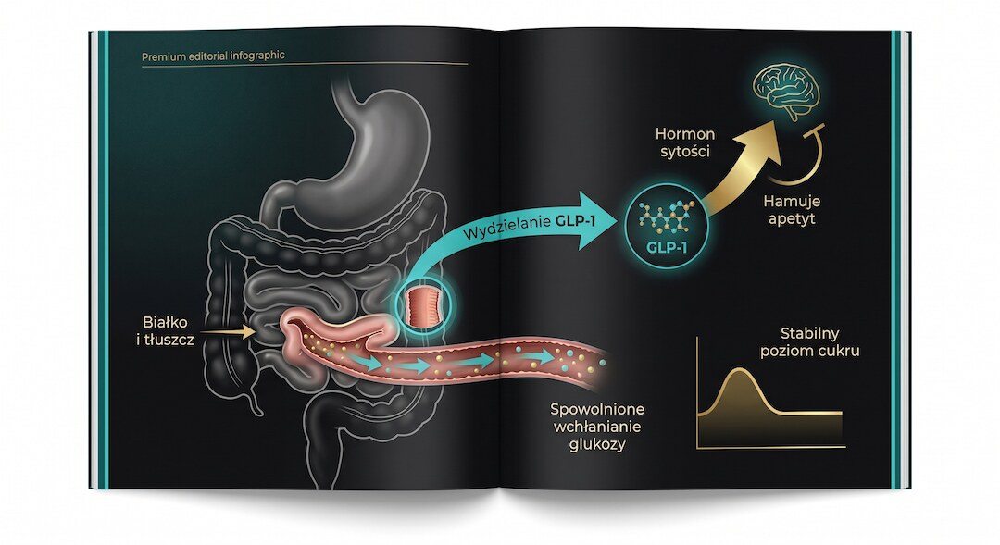
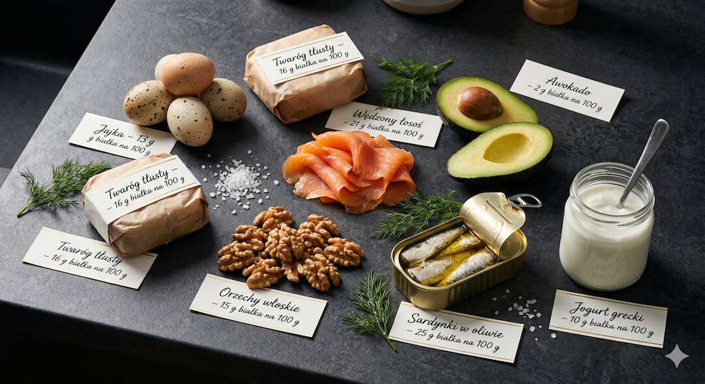
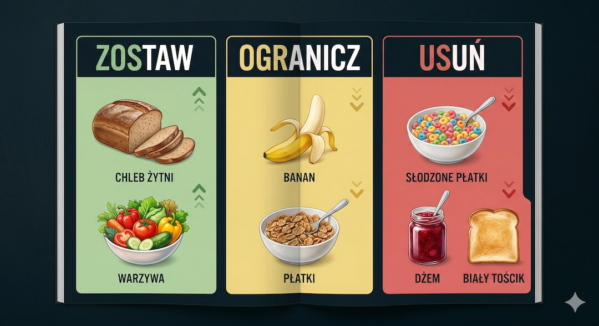
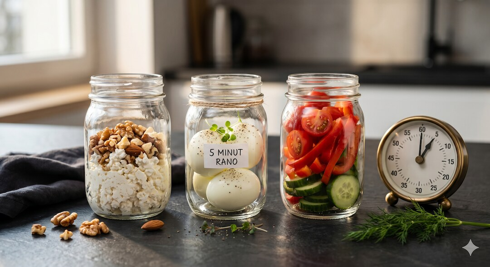

Poranny zjazd energii po trzeciej kawie to nie kwestia charakteru – to biochemia. Śniadanie zdominowane przez cukry proste uruchamia insulinową huśtawkę, która kończy się zachciankami i zmęczeniem po południu. Badania pokazują, że zamiana na śniadanie białkowo-tłuszczowe stabilizuje poziom glukozy, redukuje głód i poprawia koncentrację przez większość dnia.
Szybka odpowiedź
Śniadanie z 25–40 g białka i porcją zdrowych tłuszczów stabilizuje glukozę, wydłuża sytość i ogranicza zachcianki na słodkie po południu. Najprostszy start to jajka, twaróg pełnotłusty, jogurt grecki, łosoś lub sardynki zestawione z awokado, oliwą, orzechami i warzywami każdego ranka.
Kluczowe wnioski
- Śniadanie bogate w węglowodany proste powoduje skok insuliny, po którym często następuje hipoglikemia reaktywna i powrót głodu po 2–3 godzinach
- Białko i tłuszcz spowalniają wchłanianie glukozy i stymulują wydzielanie GLP-1 – hormonu sytości, który hamuje apetyt na kilka godzin
- Po 50. roku życia zaleca się 25–40 g wysokiej jakości białka na główny posiłek, by przeciwdziałać anabolicznej oporności mięśni
- Węglowodanów nie trzeba całkowicie eliminować – wystarczy zastąpić proste złożonymi i zawsze łączyć je z białkiem lub tłuszczem
Dlaczego śniadanie z cukrem powoduje popołudniowy zjazd energii?
Kiedy zaczynasz dzień od płatków, białego pieczywa lub słodkiej kawy, glukoza we krwi gwałtownie rośnie. Trzustka wyrzuca dużą dawkę insuliny, by szybko obniżyć poziom cukru – często zbyt skutecznie. Efekt to hipoglikemia reaktywna: poziom glukozy spada poniżej wartości wyjściowej, mózg dostaje sygnał alarmowy i po 2–3 godzinach masz ochotę na kolejną słodką dawkę. To mechanizm, a nie słaba wola.
Wraz z wiekiem reakcja insulinowa na węglowodany bywa bardziej gwałtowna, a trzustka może reagować nadmiarowo – szczególnie u osób z rozwijającą się insulinoopornością. To właśnie dlatego zjazdy energii po 50. są zazwyczaj dotkliwsze niż w młodości. Więcej o tym mechanizmie przeczytasz w artykule o ukrytym cukrze i glukozie po pięćdziesiątce.
Klasyczne badanie Ratliff i wsp. (2010) wykazało, że mężczyźni, którzy zjedli śniadanie jajeczne zamiast bagla o tej samej kaloryczności, mieli znacząco niższy poziom glukozy i greliny przez kolejne 24 godziny oraz spożyli mniej kalorii w ciągu całego dnia. Mechanizm był identyczny: wolniejsze wchłanianie i stabilniejszy poziom glukozy po białku i tłuszczu przekładają się na realną redukcję apetytu.

Jak białko i tłuszcz stabilizują poziom glukozy we krwi?
Białko i tłuszcz spowalniają opróżnianie żołądka i wchłanianie glukozy z jelita cienkiego. Efekt? Poziom cukru po posiłku rośnie wolno i łagodnie, a insulina nie musi reagować gwałtownie. Badania pokazują, że posiłek wysokobiałkowy stymuluje też wydzielanie GLP-1 – hormonu sytości, który hamuje apetyt na następne 3–5 godzin. Mniej wahań glukozy to stabilniejsza energia i mniej zachcianek.
Tłuszcz sam w sobie nie podnosi poziomu glukozy. Ma zerowy indeks glikemiczny i nie stymuluje wyrzutu insuliny. Gdy towarzyszy węglowodanom w posiłku, działa jak bufor – spowalnia ich trawienie i rozkłada podaż glukozy w czasie. To dlatego jajka sadzone na chlebie pełnoziarnistym powodują mniejszy skok cukru niż ten sam chleb z dżemem, mimo zbliżonej zawartości węglowodanów.
Badanie Gannon i Nuttall (2004) na osobach z cukrzycą typu 2 wykazało, że dieta wysokobiałkowa i niskowęglowodanowa znacząco poprawiła kontrolę glikemii – HbA1c obniżyło się o 1,7 punktu procentowego w ciągu zaledwie 5 tygodni. Choć śniadanie to nie dieta na cały dzień, poranny posiłek silnie wpływa na odpowiedź glikemiczną kolejnych posiłków dzięki efektowi określanemu w badaniach jako second meal effect.

Jakie produkty najlepiej sprawdzają się w śniadaniu białkowo-tłuszczowym?
Nie każde białko i nie każdy tłuszcz działają tak samo. Jajka, twaróg pełnotłusty, łosoś, sardynki i jogurt grecki pełnotłusty to czołówka pod względem profilu aminokwasowego i sytości. Tłuszcze z awokado, oliwy i orzechów spowalniają wchłanianie glukozy bez podnoszenia stanu zapalnego. Połączenie obu makroskładników daje efekt, którego żaden z nich osobno nie osiąga w takim stopniu.
Produkty przetworzone reklamowane jako wysokobiałkowe – batony proteinowe, jogurty smakowe light – często zawierają znaczne ilości cukrów prostych i nie sprawdzają się jako podstawa śniadania. Warto kierować się zasadą: białko z prawdziwego produktu, nie z listy składników na etykiecie. Przegląd tłuszczów i ich roli metabolicznej znajdziesz w artykule o tym, jak organizm spala tłuszcz po 50-tce.
Praktyczne połączenia dostarczające 25–35 g białka i stabilnych tłuszczów: 3 jajka całe z pół awokado (ok. 21 g białka i dobry profil tłuszczowy); 150 g twarogu pełnotłustego z 2 łyżkami orzechów włoskich (ok. 25 g białka); 100 g wędzonego łososia z 2 jajkami na twardo (ok. 30 g białka). Każda z tych opcji daje nasycenie na 3–5 godzin bez podjadania między posiłkami.
- Jajka całe (3 szt.): ok. 18 g białka + lecytyna + witaminy D i B12
- Twaróg pełnotłusty (150 g): ok. 22 g białka + wolno trawiony kazeinę
- Łosoś wędzony (100 g): ok. 20 g białka + kwasy omega-3
- Jogurt grecki pełnotłusty (200 g): ok. 18 g białka + probiotyki
- Sardynki w oliwie (1 puszka, 100 g): ok. 24 g białka + wapń + omega-3

Ile białka powinno mieć śniadanie osoby po pięćdziesiątce?
Po 50. roku życia mięśnie tracą wrażliwość na sygnał anaboliczny białka – zjawisko to nazywa się anaboliczną opornością. Oznacza to, że potrzebujesz więcej białka na posiłek, by uruchomić syntezę mięśniową. Europejska Grupa Ekspertów ESPEN rekomenduje 25–40 g wysokiej jakości białka na główny posiłek. Śniadanie to idealne miejsce, by wyrobić tę normę – i jednocześnie ograniczyć zachcianki do końca dnia.
Większość dorosłych Polaków zjada rano zaledwie 10–15 g białka – głównie z chleba lub płatków. Leidy i wsp. (2013) wykazali, że śniadanie z 35 g białka znacząco redukowało wieczorne podjadanie w porównaniu ze śniadaniem niskoproteinowym. Analogiczny mechanizm działa u dorosłych po 50. Więcej o bazie białka i kalorii w tej dekadzie życia znajdziesz w artykule o tym, dlaczego po 50-tce nie warto jeść za mało.
Ważna jest też dystrybucja białka w ciągu dnia. Spożycie ok. 30 g w trzech głównych posiłkach działa znacznie efektywniej na syntezę mięśni niż spożycie większości białka w jednym posiłku, co potwierdzają badania Paddon-Jones i wsp. (2014). Śniadanie jako pierwszy z trzech impulsów białkowych jest więc szczególnie ważne – szczególnie jeśli trenujesz rano lub nie masz gwarancji solidnego lunchu.
Co z węglowodanami rano – całkowita eliminacja czy rozsądne ograniczenie?
Całkowite wykreślenie węglowodanów ze śniadania nie jest konieczne ani w wielu przypadkach wskazane. Kluczem jest indeks glikemiczny i obecność błonnika. Owies z pełnym ziarnem, warzywa nieskrobiowe czy ciemny chleb żytni na zakwasie podnoszą glukozę wolno i stabilnie. Problem pojawia się wtedy, gdy węglowodany proste, takie jak pieczywo pszenne, dżem czy płatki śniadaniowe, dominują w posiłku bez towarzyszącego białka lub tłuszczu.
Błonnik to naturalny modulator glikemii – wiąże wodę w jelicie i tworzy żel spowalniający wchłanianie glukozy. Już 10–15 g błonnika w posiłku istotnie obniża poposiłkowy szczyt glikemiczny. Warzywa nieskrobiowe (szpinak, papryka, cukinia) są idealnym dodatkiem do śniadania białkowo-tłuszczowego: dodają błonnika i objętości bez znaczącego podnoszenia glukozy. O praktycznej roli błonnika i jego wpływie na apetyt przeczytasz też w artykule o ukrytym cukrze i hamulcu glikemicznym błonnika.
Praktyczna zasada: jeśli chcesz zachować węglowodany na śniadaniu, niech stanowią mniejszość kaloryczną posiłku i zawsze towarzyszą im białko i tłuszcz. Przykład: kromka żytniego chleba na zakwasie z 2 jajkami i awokado działa zupełnie inaczej niż ta sama kromka z masłem i miodem – mimo zbliżonej kaloryczności, odpowiedź glikemiczna jest diametralnie inna.
- ZOSTAW: chleb żytni na zakwasie, owies górski, warzywa nieskrobiowe, owoce jagodowe
- OGRANICZ: chleb pszenny razowy, płatki błyskawiczne, owoce tropikalne (mango, banan, ananas)
- USUŃ LUB ZAMIEŃ: słodzone płatki śniadaniowe, dżemy, soki owocowe, białe pieczywo tostowe

Jak wdrożyć śniadanie białkowo-tłuszczowe, gdy rano brakuje czasu?
Największy opór przed zmianą śniadania to brak czasu i poranny brak apetytu. Oba problemy mają praktyczne rozwiązania. Przygotowanie śniadania białkowo-tłuszczowego nie musi trwać dłużej niż 5–10 minut – pod warunkiem, że masz odpowiednie produkty pod ręką. Kluczem jest przygotowanie wieczorem lub planowanie na tydzień z wyprzedzeniem, a nie improwizacja rano przy otwartej lodówce.
Brak apetytu rano to często wynik wieloletnich nawyków związanych z jedzeniem słodkich i lekkich porannych posiłków – ciało przestało oczekiwać solidnego śniadania. Układ pokarmowy dostosowuje się do nowych nawyków w ciągu 1–2 tygodni. Jeśli trenujesz rano, sprawdź też artykuł o poście przerywanym i rytmie posiłków po 50-tce, bo może okazać się, że lepiej zjeść przed sesją, a nie po.
Gotowe strategie na każdy dzień tygodnia: jajka na twardo ugotowane dzień wcześniej (5 minut raz na 4 dni); twaróg z orzechami przygotowany wieczorem (3 minuty wieczorem, 0 minut rano); sardynki w oliwie z jajkami na twardo i pomidorem (zero gotowania rano). Nie musisz zmieniać wszystkiego naraz – jedna zamiana tygodniowo i obserwowanie, jak reaguje Twoje samopoczucie po południu, to wystarczający start.
- Niedziela wieczór: ugotuj 6 jajek na twardo na cały tydzień – gotowe śniadanie na 3 minuty
- Wieczorem przed: przygotuj porcję twarogu z orzechami i warzywami w słoiku – jedz prosto z lodówki
- Rano 5-minutowe: 2 jajka sadzone + pół awokado + garść szpinaku – nie potrzeba więcej czasu
- Awaryjnie: sardynki w oliwie + jajka na twardo + pomidor – zero gotowania, pełne białko

Najczęściej zadawane pytania
Co zjeść na śniadanie, żeby nie chciało mi się cukru przez cały dzień?
Postaw na śniadanie z przynajmniej 25–30 g białka i zdrowych tłuszczów: jajka z awokado, twaróg pełnotłusty z orzechami, łosoś wędzony lub jogurt grecki z pestkami. Unikaj słodkich płatków, soku owocowego i białego pieczywa bez dodatku białka. Efekt stabilnej energii jest zwykle odczuwalny już po 2–3 dniach konsekwentnej zmiany.
Ile białka na śniadanie po 50. roku życia?
Europejski panel ekspertów ESPEN rekomenduje 25–40 g wysokiej jakości białka w głównym posiłku dla osób po 50., by przełamać anaboliczną oporność mięśni. W praktyce oznacza to: 3 jajka i 100 g twarogu (ok. 27 g białka) lub 150 g jogurtu greckiego i 2 jajka na twardo (ok. 25 g). Sama filiżanka kawy z mlekiem nie wystarczy – dostarcza najwyżej 3–4 g.
Czy tłuste śniadanie nie zaszkodzi sercu po 50.?
Tłuszcze nienasycone – oliwa, awokado, orzechy, tłuste ryby – są bezpieczne i korzystne dla układu sercowo-naczyniowego. Wytyczne ESC (2021) wskazują, że to cukry proste i tłuszcze trans, a nie tłuszcze nienasycone, są głównym dietetycznym czynnikiem ryzyka chorób serca. Tłuste ryby, orzechy i awokado to nie ryzyko dla serca po 50. – to inwestycja w jego zdrowie.
Co zamiast słodkich płatków na śniadanie białkowe?
Płatki owsiane górskie (nie błyskawiczne) można zostawić – pod warunkiem, że dodasz do nich białko: 2 łyżki białka serwatkowego lub jajko podbite na końcu gotowania, albo porcję twarogu. Bez dodatku białka owsianka to posiłek węglowodanowy, który podniesie glukozę szybciej niż się spodziewasz. Inne alternatywy: jajecznica warzywna, omlet, twaróg z orzechami i jagodami.
Czy śniadanie białkowe pomaga schudnąć po 50.?
Bezpośrednio nie – nie istnieje jeden posiłek gwarantujący odchudzanie. Pośrednio tak: wyższe białko rano zwiększa termogenezę poposiłkową (koszt energetyczny trawienia białka to ok. 25% jego wartości kalorycznej) i redukuje ogólne spożycie kalorii przez lepszą kontrolę apetytu. Jakubowicz i wsp. (2013) wykazali, że osoby jedzące kaloryczne śniadania schudły więcej niż te spożywające tę samą liczbę kalorii z przesunięciem na wieczór.
Źródła
- Ratliff J et al. Consuming eggs for breakfast influences plasma glucose and ghrelin, while reducing energy intake during the next 24 hours in adult men. Nutr Res. 2010;30(2):96-103.
- Leidy HJ et al. Beneficial effects of a higher-protein breakfast on the appetitive, hormonal, and neural signals controlling energy intake regulation in overweight/obese girls. Am J Clin Nutr. 2013;97(4):677-88.
- Jakubowicz D et al. High caloric intake at breakfast vs. dinner differentially influences weight loss by modifying diet-induced thermogenesis in overweight subjects. Obesity. 2013;21(12):2504-12.
- Gannon MC, Nuttall FQ. Effect of a high-protein, low-carbohydrate diet on blood glucose control in people with type 2 diabetes. Diabetes. 2004;53(9):2375-82.
- Bauer J et al. (PROT-AGE Study Group). Evidence-based recommendations for optimal dietary protein intake in older people. J Am Med Dir Assoc. 2013;14(8):542-59.
- Astbury NM et al. Breakfast consumption affects appetite, energy intake, and the metabolic and endocrine responses to foods consumed later in the day. J Nutr. 2011;141(7):1381-9.
- Paddon-Jones D, Leidy H. Dietary protein and muscle in older persons. Curr Opin Clin Nutr Metab Care. 2014;17(1):5-11.
- ESC Guidelines on Cardiovascular Disease Prevention in Clinical Practice. Eur Heart J. 2021;42(34):3227-3337.
Uwaga: Artykuł ma charakter informacyjny i edukacyjny. Nie zastępuje konsultacji lekarskiej, diagnozy ani leczenia.